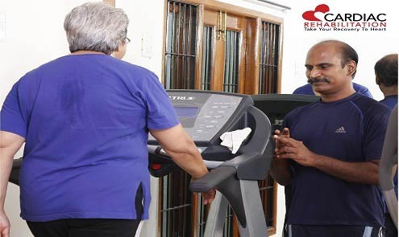
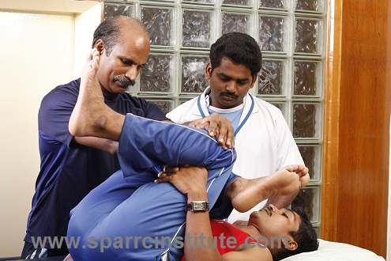
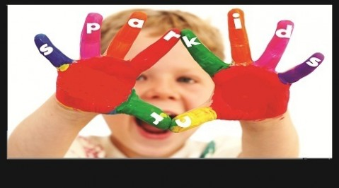
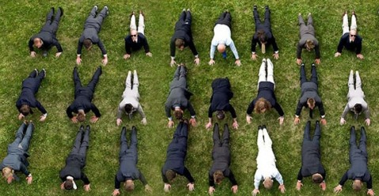
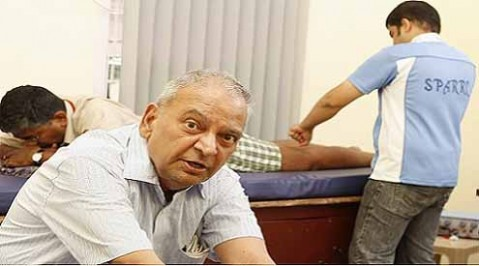
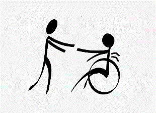
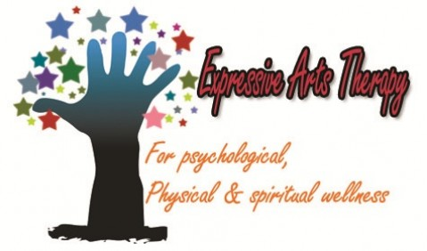

Welcome to Fitecc
The answer to all your fitness needs, at your reach. Get inspired to keep your body and mind healthy through numerous workout regimes. Sweating it out builds your body, burns fat, keeps you energized and psyched for a great day. Team it up with oxygen boosting aerobics to enhance your brainpower and focus. Stay stress-free and feel stunningly confident. Keep your blood healthy to reduce risks of long term diseases. Keep colds, flus and infections at bay. Feel buoyant and perform well through the clock. It’s time to burn those malicious calories. It’s time to give your body the healthy splendid look you’ve always wanted.
Services
Surgery Less Treatment
CAN SURGERY BE AVOIDED?……….. At SPARRC we make it happen, the patients watch it happen and some wonder how it happened. To determine the choice of treatment requires a diagnosis to understand the human body with its astounding individuality, which is the unique talent of Dr.Kannan Pugazhendi. He stresses on an extensive history elicitation from the patient which has been the hallmark of medicine, now buried in favor of costly investigations run by technological advancement. Our Sports medicine Institute is driven by skill and human care, where exercise prescription supersedes the prescription of medicine, ensuring speedy recovery and good health in the process. Inspite of Key hole surgeries which are made alluring, the fear of surgery still remains. The Key hole nature only reduces the external incision but not the invasion. Even a Key hole invasion is an extensive procedure with its own outcomes, compared to an exercise prescribed to maintain health.
Cardiac Rehabilitation

Cardiac rehabilitation (rehab) is a medically supervised program that helps to improve the health and well-being of people who have Cardiac problems.Cardiac rehab in Dr.Kannan Pugazhendi’s “SPARRC Institute” helps to
- Prevent future hospital stays, Coronary Artery Disease and premature death.
- Recover from a heart attack or heart surgery
- Identify the problem through a proper evaluation.
- Classify the patient on the basis of risk stratification
- Do exercise within the safe zone for establishing health and fitness.
- Improve the quality of life
Kalari Training
.jpg)
Kalari is the only martial art that involves extensive exercises. Below are some of the interesting facts about Kalai: Kaalkal: In the kalari context, it refers to kicks as well as leg-raising exercises to increase flexibility. Kaikuththippayattu: is a compound of kai (hand), kuththi (hit) & payattu (exercise). It consists of punches, leg moves, stretches, twists, and jumps performed in a particular sequence. It is preceded by warm-ups or mukakattu its complexity increases from one level to another. Chumattadi: Chumattadi teaches how to attack & defend against multiple opponents from all sides. This exercise should be practiced with intense speed & power.
Physiotherapy

Physiotherapy incorporates a number of different treatment techniques to provide a holistic approach to both injury prevention and cure. You will receive physiotherapy from a state registered Physiotherapist with rich experience in the treatment of musculoskeletal conditions from chronic low back pain to sports injuries and postural deficits. Most of our physiotherapists are also qualified Clinical Pilates Instructors and Acupuncturists
Physiotherapy incorporates a number of different treatment techniques to provide a holistic approach to both injury prevention and cure. You will receive physiotherapy from a state registered Physiotherapist with rich experience in the treatment of musculoskeletal conditions from chronic low back pain to sports injuries and postural deficits. Most of our physiotherapists are also qualified Clinical Pilates Instructors and Acupuncturists
SPARRC KIDS Health Program

SPARRC Institute is now conducting the Kids Health Program. After school activity as an awareness program for thrice a week. This Program is also extended to the underprivileged children with care & concern.
SPARRC Institute is now conducting the Kids Health Program. After school activity as an awareness program for thrice a week. This Program is also extended to the underprivileged children with care & concern.
Corporate Wellness

Every one of our trainers are certified, have completed Sports and Wellness specialty coursesand shadow a doctor and Master Trainer before seeing any clients. Our in-depth knowledge ofthe human body allows us to safely prescribe exercises that directly relate to an individual’sgoals. In addition to helping the general fitness client, we have trainers that are specialists in areas such as tennis, football, cricket, squash, running, power lifting and post-surgical rehabilitation. Our staff works with a wide variety of clients Inclusive of : Tamil Nadu Police, Indian Army,IT corporates,Manufacturing Industries,Educational Institutes, Banking Institutions etc.
Every one of our trainers are certified, have completed Sports and Wellness specialty coursesand shadow a doctor and Master Trainer before seeing any clients. Our in-depth knowledge ofthe human body allows us to safely prescribe exercises that directly relate to an individual’sgoals. In addition to helping the general fitness client, we have trainers that are specialists in areas such as tennis, football, cricket, squash, running, power lifting and post-surgical rehabilitation. Our staff works with a wide variety of clients Inclusive of : Tamil Nadu Police, Indian Army,IT corporates,Manufacturing Industries,Educational Institutes, Banking Institutions etc.
Acupuncture
.jpg)
Acupuncture is among the oldest healing practices in the world. As part of traditional Chinese medicine (TCM), acupuncture aims to restore and maintain health through the stimulation of specific points on the body. We sparrc institute use Acupuncture as a second line of defense in treating varied painful conditions, it helps in fastening the healing process.
PRINCIPLE OF ACUPUNCTURE:
Oriental medicine is a holistic approach, which is based on the treatment of all bodily systems. Acupuncture benefits the improvement of physical health conditions as well as affective disorders and instills a feeling of increased mental clarity.
Geriatrics

Geriatrics is a sub-specialty of internal medicine that focuses on health care of elderly people. It aims to promote health by preventing and treating diseases and disabilities in older adults, The term geriatrics comes from the Greek geron meaning “old man” and iatros meaning “healer”.
Geriatrics is a sub-specialty of internal medicine that focuses on health care of elderly people. It aims to promote health by preventing and treating diseases and disabilities in older adults, The term geriatrics comes from the Greek geron meaning “old man” and iatros meaning “healer”.
Sparrc for Specially abled!

FAMES – Fitness Adaptation & Movement Education Services is a division of sparrc engaged to improve quality of physical, mental and social activities of specially abled. The dedicated team of sparrc – fames have the experts in the field of Physiotherapy, Occupational therapy, Speech therapy, Special education, Acupuncture, Aquatherapy, Pulsed electro magnetic field, Art therapy, Play therapy, Neuro rehabilitation, Reiki, EFT, and Pranic healing Here at Sparrc, we prefer to address Autism, ADHD, Down’s syndrome, Cerebral palsy and children with difficulties as differentially abled understanding the uniqueness in their ability.
FAMES – Fitness Adaptation & Movement Education Services is a division of sparrc engaged to improve quality of physical, mental and social activities of specially abled. The dedicated team of sparrc – fames have the experts in the field of Physiotherapy, Occupational therapy, Speech therapy, Special education, Acupuncture, Aquatherapy, Pulsed electro magnetic field, Art therapy, Play therapy, Neuro rehabilitation, Reiki, EFT, and Pranic healing Here at Sparrc, we prefer to address Autism, ADHD, Down’s syndrome, Cerebral palsy and children with difficulties as differentially abled understanding the uniqueness in their ability.
Creative Arts & Movement Therapy

Creative Arts & Movement Therapy For psychological, Physical & Spiritual wellness !
Creative Arts & Movement Therapy For psychological, Physical & Spiritual wellness !